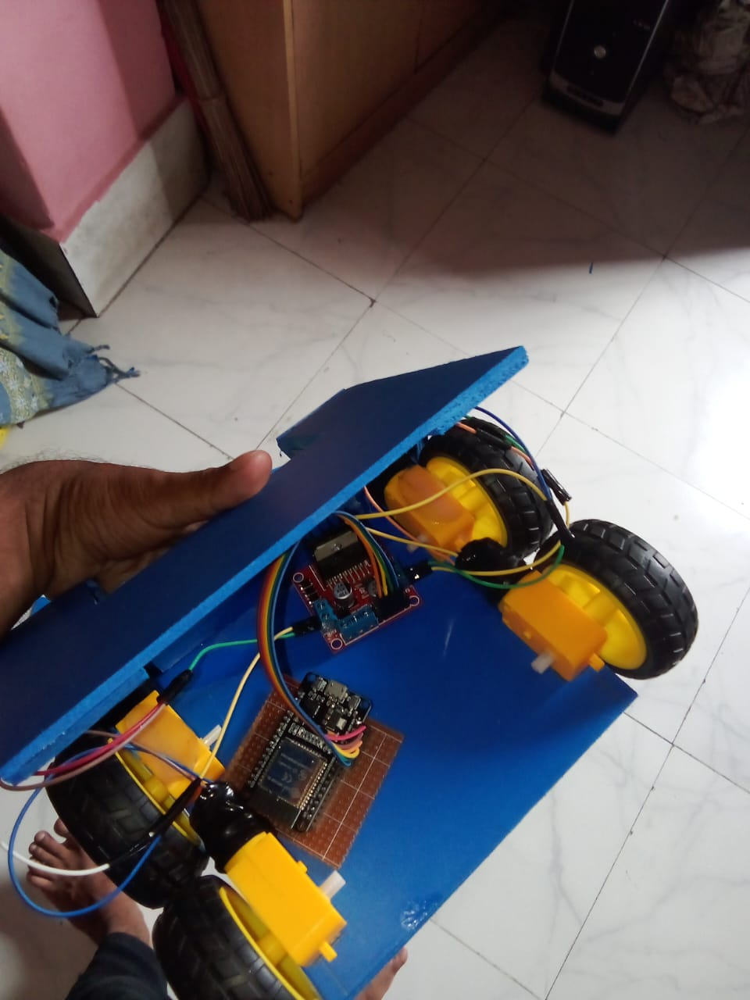

AKKUPI x RoboStrom 2025 | Mini Soccer Experience
On 24 June 2025, our team participated in AKKUPI x RoboStrom 2025, hosted at A K Khan UCEP Polytechnic Institute and organized by AKKUPI Robotics and Code. Bringing together student builders and robotics enthusiasts, the event turned the campus into a high-energy arena of hardware innovation, rapid problem-solving, and head-to-head competition.
We entered the Mini Soccer segment, where agility, wireless responsiveness, and pushing torque decide every match. From pre-match calibration to navigating fast-paced defensive blocks on the field, competing in the tournament tested both our circuit reliability and driving coordination under real match pressure.
Event Details: 24 June 2025 • A K Khan UCEP Polytechnic Institute • Organized by AKKUPI Robotics and Code • Segment: Mini Soccer
Custom Bot Engineering: Built for Speed & Arena Control

To balance responsive wireless control with steady four-wheel traction, we engineered our bot around a compact, reliable hardware stack powered by ESP32 DevKit V1, an L298N Motor Driver, and 4WD TT Gear Motors.
Every match demanded quick acceleration, sharp turning in tight corners, and enough pushing force to contest loose balls without losing power stability.
ESP32 DevKit V1
Served as the central microcontroller, providing low-latency Bluetooth/Wi-Fi communication for instant directional commands during rapid plays.
L298N Motor Driver
Handled dual-channel H-bridge motor control, managing forward, reverse, and differential steering signals cleanly under high current load.
4x TT Plastic Gear Motors
Configured in a 4-wheel-drive layout to deliver consistent grip, quick acceleration, and strong ball-pushing stability across the arena floor.
Key Takeaways From the Competition
Participating in AKKUPI x RoboStrom 2025 gave our team hands-on insight into power distribution, chassis weight balance, and real-time motor tuning.
Events organized by communities like AKKUPI Robotics and Code provide an invaluable proving ground to turn bench prototypes into match-ready machines.